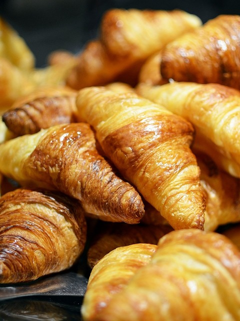

Tervetuloa Herkkugalleriaan!
Herkkugalleria tarjoaa unohtumattomia makuelämyksiä jokaiselle leivonnaisten ystävälle. Tule tutustumaan kattavaan valikoimaamme, joka sisältää tuoreita leipiä, herkullisia kakkuja ja muita leivonnaisia. Kaikki tuotteemme valmistetaan suurella sydämellä ja perinteitä kunnioittaen.

Käy läpi valikoimamme verkossa tai tule käymään paikan päällä nauttimassa tuoreista herkuista!
Perustettu vuonna 1985, Herkkugalleria on kasvanut pienestä perheleipomosta arvostetuksi paikalliseksi herkkupisteeksi. Tarinamme on täynnä perinteitä, laatua ja innovaatiota - arvoja, jotka näkyvät jokaisessa leivonnaisessamme.